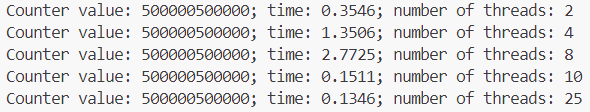
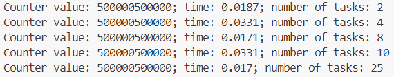

Задача 1. Различия между threading, multiprocessing и async в Python
Напишите три различных программы на Python, использующие каждый из подходов: threading, multiprocessing и async. Каждая программа должна считать сумму всех чисел от 1 до 1000000. Разделите вычисления на несколько параллельных задач для ускорения выполнения.
Порядок выполнения:
-
Напишите программу на Python для каждого подхода: threading, multiprocessing и async.
-
Каждая программа должна содержать функцию calculate_sum(), которая будет выполнять вычисления.
-
Для threading используйте модуль threading, для multiprocessing - модуль multiprocessing, а для async - ключевые слова async/await и модуль asyncio.
-
Каждая программа должна разбить задачу на несколько подзадач и выполнять их параллельно.
-
Замерьте время выполнения каждой программы и сравните результаты.
threading
import threading
import time
counter = 0
lock = threading.Lock()
def calculate_sum(beg, end):
global counter
for i in range(beg, end):
lock.acquire()
counter += i
lock.release()
def main(num):
global counter
threads = []
beg = 1
step = int(1000000 / num)
for i in range(num):
end = beg + step
threads.append(threading.Thread(target=calculate_sum, args=(beg, end, )))
beg = end
start = time.time()
for thread in threads:
thread.start()
for thread in threads:
thread.join()
finish = time.time() - start
print(f'Counter value: {counter}; time: {round(finish, 4)}; number of threads: {num}')
counter = 0
if __name__ == '__main__':
thread_nums = [2, 4, 8, 10, 25]
for thr in thread_nums:
main(thr)
Результаты:

multiprocessing
Для межпроцессного обмена данными использую очереди, так как этот вид обмена более безопасный.
from multiprocessing import Process, Queue
import time
def calculate_sum(beg, end, q):
counter = 0
for i in range(beg, end):
counter += i
q.put(counter)
def main(num):
q = Queue()
processes = []
beg = 1
step = int(1000000 / num)
for i in range(num):
end = beg + step
processes.append(Process(target=calculate_sum, args=(beg, end, q,)))
beg = end
start = time.time()
for p in processes:
p.start()
for p in processes:
p.join()
finish = time.time() - start
answer = 0
while not q.empty():
answer += q.get()
print(f'Counter value: {answer}; time: {round(finish, 4)}; number of processes: {num}')
if __name__ == '__main__':
process_nums = [2, 4, 8, 10, 25]
for process_num in process_nums:
main(process_num)
Результаты:

async
import asyncio
import time
async def calculate_sum(beg, end):
counter = 0
for i in range(beg, end):
counter += i
return counter
async def main(num):
beg = 1
step = int(1000000 / num)
calculate_tasks = []
start = time.time()
for i in range(num):
end = beg + step
beg_new = beg
beg = end
calculate_task = asyncio.create_task(calculate_sum(beg_new, end))
calculate_tasks.append(calculate_task)
answers = await asyncio.gather(*calculate_tasks)
finish = time.time() - start
print(f'Counter value: {sum(answers)}; time: {round(finish, 4)}; number of tasks: {num}')
if __name__ == '__main__':
task_nums = [2, 4, 8, 10, 25]
for task_num in task_nums:
asyncio.run(main(task_num))
Результаты:

Выводы
-
Multiprocessing показывает лучшие результаты, чем threading при 2-8 потоках/процессах, т.к. задача связана с вычислениями. Глобальная блокировка интерпретатора не позволяет одновременно выполняться нескольким потокам.
-
Увеличение количества процессов приводит к замедлению выполнения программы. Это может быть связано с более высокой сложностью создания процесса (в отличие от потока) и невысокой сложностью самой задачи.
-
Применение асинхронности показало лучшие результаты по времени, однако разбиение задачи на все большее количество подзадач не приводит к более быстрому выполнению задачи. Это может быть связано с особенностью задачи (узкое место в скорости процессора, а не в ожидании ответа).